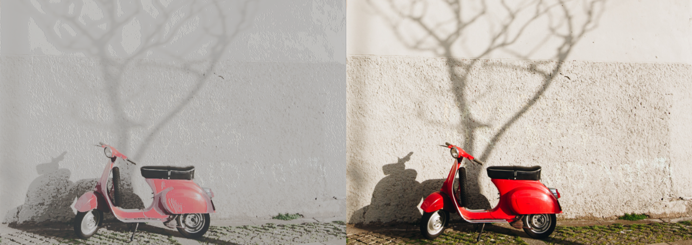

For this process, we go through each image pixel applying two different strategies, the average technique, which applies the average for the RGB values, and the LUMA Y601 technique, which gives different weights to Red, Green and Blue, creating a grayscale that has a different sensitivity to brightness and luminance.
Average method (Images):
Average method (Video):
Luma Y'601 method (Images):
Luma Y'601 method (Video):
For this process, we go through each image pixel adding each element of the image to its local neighbors, weighted by the kernel, this will allow us to apply "filters" to images and videos, such as saturation, high edge detection, high definition, emboss and blur. We'll use the following two functions:
Saturation (Images):
Saturation (Video):
High edge detection (Images):
High edge detection (Video):
High definition (Images):
High definition (Video):
Emboss (Images):
Emboss (Video):
Box Blur (Images):
Box Blur (Video):
In this conversion process, we created a 10 size array with the ascii character we want to use to represent brightness, we'll go through each pixel of the image/video, get and apply the pixel color to the character and then pick the char we want with a brightness division to get a value between 0-10 ({'█', '█', '▓', '▒', '░', '#', '≡', '%', '$', '@', '&'})
Ascii conversion (Images):
Ascii conversion (Video):